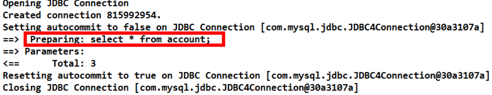
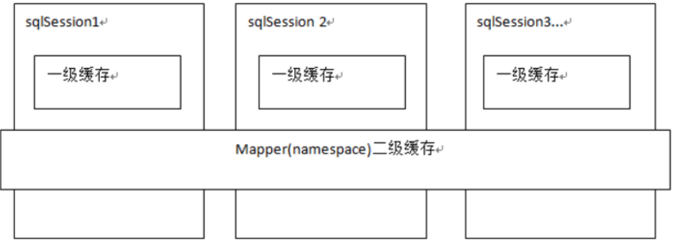
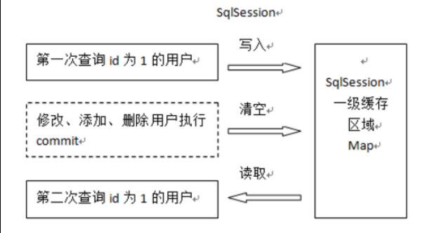
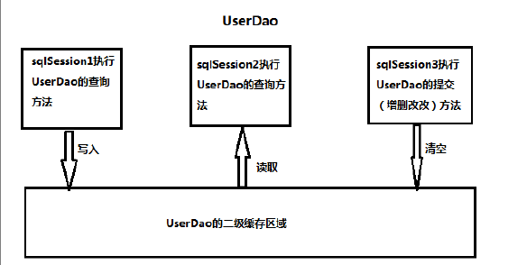

实际开发过程中很多时候我们并不需要总是在加载用户信息时就一定要加载他的账户信息。
像大多数的持久化框架一样,Mybatis 也提供了缓存策略,通过缓存策略来减少数据库的查询次数,从而提高性能。
Mybatis 中缓存分为一级缓存,二级缓存。
延迟加载策略
实际开发过程中很多时候我们并不需要总是在加载用户信息时就一定要加载他的账户信息。
何为延迟加载
就是在需要用到数据时才进行加载,不需要用到数据时就不加载数据。延迟加载也称懒加载.
好处:先从单表查询,需要时再从关联表去关联查询,大大提高数据库性能,因为查询单表要比关联查询多张表速度要快。
坏处:因为只有当需要用到数据时,才会进行数据库查询,这样在大批量数据查询时,因为查询工作也要消耗时间,所以可能造成用户等待时间变长,造成用户体验下降。
实现需求
需求:
查询账户(Account)信息并且关联查询用户(User)信息。如果先查询账户(Account)信息即可满足要求,当我们需要查询用户(User)信息时再查询用户(User)信息。把对用户(User)信息的按需去查询就是延迟加载。
实现多表操作时,我们使用了 resultMap 来实现一对一,一对多,多对多关系的操作。主要是通过 association、collection 实现一对一及一对多映射。association、collection 具备延迟加载功能。
使用 assocation 实现延迟加载
需求:
查询账户信息同时查询用户信息。
账户的持久层 DAO 接口
public interface IAccountDao {
}
/**
* 查询所有账户,同时获取账户的所属用户名称以及它的地址信息
* @return
*/
List<Account> findAll();
账户的持久层映射文件
<?xml version="1.0" encoding="UTF-8"?>
<!DOCTYPE mapper
PUBLIC "-//mybatis.org//DTD Mapper 3.0//EN"
"http://mybatis.org/dtd/mybatis-3-mapper.dtd">
<mapper namespace="uestc.zhangkx.dao.IAccountDao">
<!-- 建立对应关系 -->
<resultMap type="account" id="accountMap">
<id column="aid" property="id"/>
<result column="uid" property="uid"/>
<result column="money" property="money"/>
<!-- 它是用于指定从表方的引用实体属性的 -->
<association property="user" javaType="user"
select="uestc.zhangkx.dao.IUserDao.findById"
column="uid">
</association>
</resultMap>
<select id="findAll" resultMap="accountMap">
select * from account
</select>
</mapper>
select: 填写我们要调用的 select 映射的 id
column : 填写我们要传递给 select 映射的参数
用户的持久层接口和映射文件
public interface IUserDao {
}
/**
* 根据 id 查询
* @param userId
* @return
*/
User findById(Integer userId);
<?xml version="1.0" encoding="UTF-8"?>
<!DOCTYPE mapper
PUBLIC "-//mybatis.org//DTD Mapper 3.0//EN"
"http://mybatis.org/dtd/mybatis-3-mapper.dtd">
<mapper namespace="uestc.zhangkx.dao.IUserDao">
<!-- 根据 id 查询 -->
<select id="findById" resultType="user" parameterType="int" >
select * from user where id = #{uid}
</select>
</mapper>
开启 Mybatis 的延迟加载策略
我们需要在 Mybatis 的配置文件 SqlMapConfig.xml 文件中添加延迟加载的配置。
<settings>
<setting name="lazyLoadingEnabled" value="true"/>
<setting name="aggressiveLazyLoading" value="false"/>
</settings>
编写测试只查账户信息不查用户信息
public class AccountTest {
private InputStream in ;
private SqlSessionFactory factory;
private SqlSession session;
private IAccountDao accountDao;
@Test
public void testFindAll() {
//6.执行操作
List<Account> accounts = accountDao.findAll();
}
@Before//在测试方法执行之前执行
public void init()throws Exception {
//1.读取配置文件
in = Resources.getResourceAsStream("SqlMapConfig.xml");
//2.创建构建者对象
SqlSessionFactoryBuilder builder = new SqlSessionFactoryBuilder();
//3.创建 SqlSession 工厂对象
factory = builder.build(in);
//4.创建 SqlSession 对象
session = factory.openSession();
//5.创建 Dao 的代理对象
accountDao = session.getMapper(IAccountDao.class);
}
@After//在测试方法执行完成之后执行
public void destroy() throws Exception{
//7.释放资源
session.close();
in.close();
}
}
我们发现,因为本次只是将 Account 对象查询出来放入 List 集合中,并没有涉及到 User 对象,所以就没有发出 SQL 语句查询账户所关联的 User 对象的查询。

使用 Collection 实现延迟加载
同样我们也可以在一对多关系配置的<collection>结点中配置延迟加载策略。
<collection>结点中也有 select 属性,column 属性。
需求:完成加载用户对象时,查询该用户所拥有的账户信息。
在 User 实体类中加入 List<Account>属性
public class User implements Serializable {
private Integer id;
private String username;
private Date birthday;
private String sex;
private String address;
private List<Account> accounts;
public List<Account> getAccounts() {
return accounts;
}
public void setAccounts(List<Account> accounts) {
this.accounts = accounts;
}
public Integer getId() {
return id;
}
public void setId(Integer id) {
this.id = id;
}
public String getUsername() {
return username;
}
public void setUsername(String username) {
this.username = username;
}
public Date getBirthday() {
return birthday;
}
public void setBirthday(Date birthday) {
this.birthday = birthday;
}
public String getSex() {
return sex;
}
public void setSex(String sex) {
this.sex = sex;
}
public String getAddress() {
return address;
}
public void setAddress(String address) {
this.address = address;
}
@Override
public String toString() {
return "User [id=" + id + ", username=" + username + ", birthday=" + birthday
+ ", sex=" + sex + ", address="
+ address + "]";
}
}
编写用户和账户持久层接口的方法
/**
* 查询所有用户,同时获取出每个用户下的所有账户信息
* @param uid
*/
List<User> findAll();
/**
* 根据用户 id 查询账户信息
* @param uid
* @return
*/
List<Account> findByUid(Integer uid);
编写用户持久层映射配置
<resultMap type="user" id="userMap">
<id column="id" property="id"></id>
<result column="username" property="username"/>
<result column="address" property="address"/>
<result column="sex" property="sex"/>
<result column="birthday" property="birthday"/>
<!-- collection 是用于建立一对多中集合属性的对应关系
ofType 用于指定集合元素的数据类型
select 是用于指定查询账户的唯一标识(账户的 dao 全限定类名加上方法名称)
column 是用于指定使用哪个字段的值作为条件查询
-->
<collection property="accounts" ofType="account"
select="uestc.zhangkx.dao.IAccountDao.findByUid"
column="id">
</collection>
</resultMap>
<!-- 配置查询所有操作 -->
<select id="findAll" resultMap="userMap">
select * from user
</select>
<collection>标签:主要用于加载关联的集合对象
select 属性:用于指定查询 account 列表的 sql 语句,所以填写的是该 sql 映射的 id
column 属性:用于指定 select 属性的 sql 语句的参数来源,上面的参数来自于 user 的 id 列,所以就写成 id 这一个字段名了
编写账户持久层映射配置
<!-- 根据用户 id 查询账户信息 -->
<select id="findByUid" resultType="account" parameterType="int">
select * from account where uid = #{uid}
</select>
测试只加载用户信息
/**
*
* <p>Title: MybastisCRUDTest</p>
* <p>Description: 一对多的操作</p>
* <p>Company: http://www.itheima.com/ </p>
*/
public class UserTest {
private InputStream in ;
private SqlSessionFactory factory;
private SqlSession session;
private IUserDao userDao;
@Test
public void testFindAll() {
//6.执行操作
List<User> users = userDao.findAll();
}
@Before//在测试方法执行之前执行
public void init()throws Exception {
//1.读取配置文件
in = Resources.getResourceAsStream("SqlMapConfig.xml");
//2.创建构建者对象
SqlSessionFactoryBuilder builder = new SqlSessionFactoryBuilder();
//3.创建 SqlSession 工厂对象
factory = builder.build(in);
//4.创建 SqlSession 对象
session = factory.openSession();
//5.创建 Dao 的代理对象
userDao = session.getMapper(IUserDao.class);
}
@After//在测试方法执行完成之后执行
public void destroy() throws Exception{
session.commit();
//7.释放资源
session.close();
in.close();
}
}
Mybatis 缓存
像大多数的持久化框架一样,Mybatis 也提供了缓存策略,通过缓存策略来减少数据库的查询次数,从而提高性能。
Mybatis 中缓存分为一级缓存,二级缓存。

Mybatis 一级缓存
证明一级缓存的存在
一级缓存是 SqlSession 级别的缓存,只要 SqlSession 没有 flush 或 close,它就存在。
编写用户持久层 Dao 接口
/**
*
* <p>Title: IUserDao</p>
* <p>Description: 用户的业务层接口</p>
* <p>Company: http://www.itheima.com/ </p>
*/
public interface IUserDao {
/**
* 根据 id 查询
* @param userId
* @return
*/
User findById(Integer userId);
}
编写用户持久层映射文件
<?xml version="1.0" encoding="UTF-8"?>
<!DOCTYPE mapper
PUBLIC "-//mybatis.org//DTD Mapper 3.0//EN"
"http://mybatis.org/dtd/mybatis-3-mapper.dtd">
<mapper namespace="uestc.zhangkx.dao.IUserDao">
<!-- 根据 id 查询 -->
<select id="findById" resultType="UsEr" parameterType="int" useCache="true">
select * from user where id = #{uid}
</select>
</mapper>
编写测试方法
public class UserTest {
private InputStream in ;
private SqlSessionFactory factory;
private SqlSession session;
private IUserDao userDao;
@Test
public void testFindById() {
//6.执行操作
User user = userDao.findById(41);
System.out.println("第一次查询的用户:"+user);
User user2 = userDao.findById(41);
System.out.println("第二次查询用户:"+user2);
System.out.println(user == user2);
}
@Before//在测试方法执行之前执行
public void init()throws Exception {
//1.读取配置文件
in = Resources.getResourceAsStream("SqlMapConfig.xml");
//2.创建构建者对象
SqlSessionFactoryBuilder builder = new SqlSessionFactoryBuilder();
//3.创建 SqlSession 工厂对象
factory = builder.build(in);
//4.创建 SqlSession 对象
session = factory.openSession();
//5.创建 Dao 的代理对象
userDao = session.getMapper(IUserDao.class);
}
@After//在测试方法执行完成之后执行
public void destroy() throws Exception{
//7.释放资源
session.close();
in.close();
}
}
测试结果如下:

我们可以发现,虽然在上面的代码中我们查询了两次,但最后只执行了一次数据库操作,这就是 Mybatis 提供给我们的一级缓存在起作用了。因为一级缓存的存在,导致第二次查询 id 为 41 的记录时,并没有发出 sql 语句从数据库中查询数据,而是从一级缓存中查询。
一级缓存的分析
一级缓存是 SqlSession 范围的缓存,当调用 SqlSession 的修改,添加,删除,commit(),close()等方法时,就会清空一级缓存。

第一次发起查询用户 id 为 1 的用户信息,先去找缓存中是否有 id 为 1 的用户信息,如果没有,从数据库查询用户信息。得到用户信息,将用户信息存储到一级缓存中。
如果 sqlSession 去执行 commit 操作(执行插入、更新、删除),清空 SqlSession 中的一级缓存,这样做的目的为了让缓存中存储的是最新的信息,避免脏读。
第二次发起查询用户 id 为 1 的用户信息,先去找缓存中是否有 id 为 1 的用户信息,缓存中有,直接从缓存中获取用户信息。
测试一级缓存的清空
/**
* 测试一级缓存
*/
@Test
public void testFirstLevelCache(){
User user1 = userDao.findById(41);
System.out.println(user1);
//
sqlSession.close();
//再次获取 SqlSession 对象
//
sqlSession = factory.openSession();
sqlSession.clearCache();//此方法也可以清空缓存
userDao = sqlSession.getMapper(IUserDao.class);
User user2 = userDao.findById(41);
System.out.println(user2);
System.out.println(user1 == user2);
}
/**
* 测试缓存的同步
*/
@Test
public void testClearlCache(){
//1.根据 id 查询用户
User user1 = userDao.findById(41);
System.out.println(user1);
//2.更新用户信息
user1.setUsername("update user clear cache");
user1.setAddress("北京市海淀区");
userDao.updateUser(user1);
//3.再次查询 id 为 41 的用户
User user2 = userDao.findById(41);
System.out.println(user2);
System.out.println(user1 == user2);
}
当执行 sqlSession.close()后,再次获取 sqlSession 并查询 id=41 的 User 对象时,又重新执行了 sql语句,从数据库进行了查询操作。
Mybatis 二级缓存
二级缓存是 mapper 映射级别的缓存,多个 SqlSession 去操作同一个 Mapper 映射的 sql 语句,多个SqlSession 可以共用二级缓存,二级缓存是跨 SqlSession 的。
二级缓存结构图

首先开启 mybatis 的二级缓存。
sqlSession1 去查询用户信息,查询到用户信息会将查询数据存储到二级缓存中。
如果 SqlSession3 去执行相同 mapper 映射下 sql,执行 commit 提交,将会清空该 mapper 映射下的二级缓存区域的数据。
sqlSession2 去查询与 sqlSession1 相同的用户信息,首先会去缓存中找是否存在数据,如果存在直接从缓存中取出数据。
二级缓存的开启与关闭
第一步:在 SqlMapConfig.xml 文件开启二级缓存
<settings>
<!-- 开启二级缓存的支持 -->
<setting name="cacheEnabled" value="true"/>
</settings>
因为 cacheEnabled 的取值默认就为 true,所以这一步可以省略不配置。为 true 代表开启二级缓存;为false 代表不开启二级缓存。
第二步:配置相关的 Mapper 映射文件
<?xml version="1.0" encoding="UTF-8"?>
<!DOCTYPE mapper
PUBLIC "-//mybatis.org//DTD Mapper 3.0//EN"
"http://mybatis.org/dtd/mybatis-3-mapper.dtd">
<mapper namespace="uestc.zhangkx.dao.IUserDao">
<!-- 开启二级缓存的支持 -->
<cache></cache>
</mapper>
<cache>标签表示当前这个 mapper 映射将使用二级缓存,区分的标准就看 mapper 的 namespace 值。
第三步:配置 statement 上面的 useCache 属性
<!-- 根据 id 查询 -->
<select id="findById" resultType="user" parameterType="int" useCache="true">
select * from user where id = #{uid}
</select>
将 UserDao.xml 映射文件中的<select>标签中设置 useCache=”true”代表当前这个 statement 要使用二级缓存,如果不使用二级缓存可以设置为 false。
注意:针对每次查询都需要最新的数据 sql,要设置成 useCache=false,禁用二级缓存。
二级缓存测试
public class SecondLevelCacheTest {
private InputStream in;
private SqlSessionFactory factory;
@Before//用于在测试方法执行之前执行
public void init()throws Exception{
//1.读取配置文件,生成字节输入流
in =Resources.getResourceAsStream("SqlMapConfig.xml");
//2.获取 SqlSessionFactory
factory = new SqlSessionFactoryBuilder().build(in);
}
@After//用于在测试方法执行之后执行
public void destroy()throws Exception{
in.close();
}
/**
* 测试一级缓存
*/
@Test
public void testFirstLevelCache(){
SqlSession sqlSession1 = factory.openSession();
IUserDao dao1 = sqlSession1.getMapper(IUserDao.class);
User user1 = dao1.findById(41);
System.out.println(user1);
sqlSession1.close();//一级缓存消失
SqlSession sqlSession2 = factory.openSession();
IUserDao dao2 = sqlSession2.getMapper(IUserDao.class);
User user2 = dao2.findById(41);
System.out.println(user2);
sqlSession2.close();
}
System.out.println(user1 == user2);
}
经过上面的测试,我们发现执行了两次查询,并且在执行第一次查询后,我们关闭了一级缓存,再去执行第二次查询时,我们发现并没有对数据库发出 sql 语句,所以此时的数据就只能是来自于我们所说的二级缓存。
二级缓存注意事项
当我们在使用二级缓存时,所缓存的类一定要实现 java.io.Serializable 接口,这种就可以使用序列化方式来保存对象。
public class User implements Serializable {
private Integer id;
private String username;
private Date birthday;
private String sex;
private String address;
}